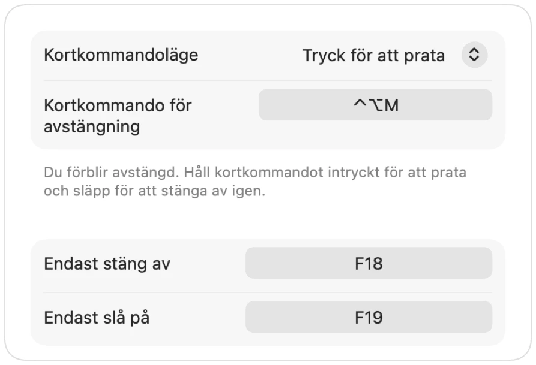

Push to talk på en Mac, i alla appar
Push to talk håller mikrofonen tyst tills du håller ned en tangent. Det är det smidigaste sättet att undvika störande ljud vid distansarbete, i stora möten eller i bullriga rum. Ändå är det få appar som har funktionen, och alla använder olika tangenter.
Muffle lägger till tryck för att prata i alla appar på din Mac. Välj Tryck för att prata i Inställningar, håll kortkommandot intryckt för att prata och släpp för att stänga av igen.
Använd push to talk
- 1
Installera Muffle.
- 2
Ställ in Kortkommandoläge på ”Tryck för att prata” i Muffle-inställningar.
- 3
Håll ned Control-Alternativ-M medan du pratar.
- 4
Släpp tangenten. Du är avstängd igen.

- Föredrar du en enskild tangent? Ställ in en prattangent i Inställningar: Höger ⌥, fn eller en extra musknapp.
- Välj ett bekvämt kortkommando i Muffle-inställningar, till exempel en F-tangent.
Frågor
Fungerar push to talk i Google Meet?
Ja. Muffle stänger av själva mikrofonen, så push to talk fungerar i Meet, Zoom, Teams, Discord och alla andra appar.
Finns det push to mute?
Ja. Välj ”Tryck för att stänga av” och håll kortkommandot intryckt för att stänga av för en stund, som en hostknapp.